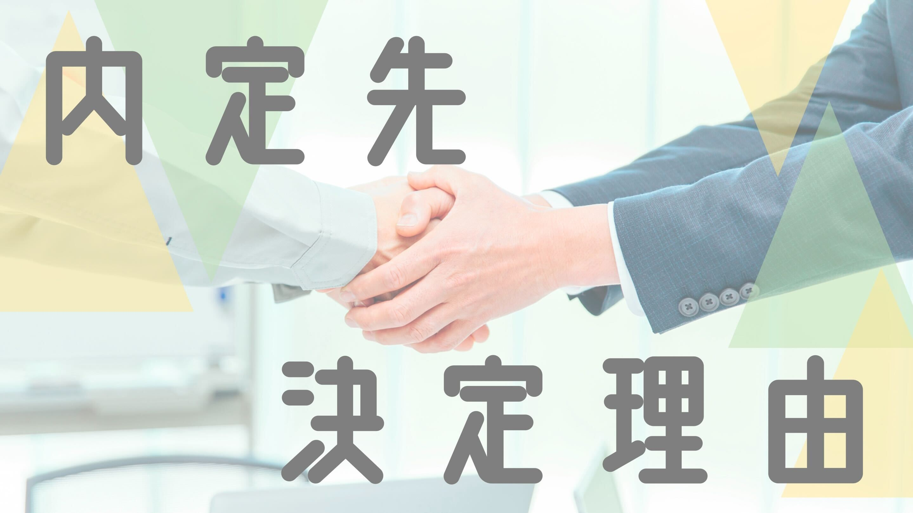

内定先決定理由コラム
理系院生・外資消費財メーカー
概要
就職活動というと、選考で受かった、落ちたという受験に近いような印象を持つ方が圧倒的に多いと思います。実際に、就職活動では受かる・落ちるの前段階にある、「どこを志望しようか」、という点で壁にぶつかると思います。私自身もキャリアの土俵に立つために悩みましたが、そういった就活での心境的な経験をお伝えできればと思います。
1.就活スタート（実は再スタート？）
1.1.かつての学部就活
実は僕は大学院に進学してから就活を始めた人間ではないんです。元々学部3回生の時には一度一通り就活を経験したうえで進学しました。先に当時のことについて軽く触れておくと、当時の自分は理系学生＝技術職というイメージ（偏見）を持っていました。実際に自分の周囲の先輩でも開発職や研究職といった技術職に進む方が圧倒的に多かったです、、、もちろん学部3回生の時に就活していた自分は、大学で学んでいる学問領域に近いメーカーの技術職（特に開発職）を中心に見ていました。実際に年明けくらいの時期に、早期選考ルートで某財閥系メーカー（開発職）の最終面接まで行ってました。一方、就活をしながらどことなくこのままのらりくらり進路を決めていいのかかなり迷ってました。目先には確かに終身雇用、キラキラな開発職の内定がぶら下がってましたが、自分の中に何か引っかかるものがあり、結局進学してからゆっくり将来を考えるのも一つだなと思い、受けていた企業を辞退して大学院に進学しました（当時の人事さん本当にごめんなさい）。もちろん進学を選択した時点でも自分の中で直感的に感じた違和感の正体は全くつかめていない状況でした。今となっては自分が何にモチベーションを感じるのか、いわゆる自己分析を怠っていたからこそ最終的な進路の意思決定に悩んだのだと思います。
1.2.Re: 就活
大学院に進学した自分は4月頃から再び就活を始めました。学部時代は自分の専門領域に近い企業しか見ていなかったため、夏インターンシップではもう少し幅をきかせて企業をみてもいいと思い準備を進めていました。インターンシップである程度聞かれる内容はなんとなく理解していたため、当時のメンターさんに協力してもらいながらガクチカの作成、深掘りをメインで行ってました。（今となっては少し反省してますが研究概要もかいておけばよかったです）あわせて、京大のキャリアセンターで開催される業界分析セミナーや合同説明会に参加してこれまでに出会ってこなかった業界も食わず嫌いせずにみるようにしました。結果的に、これまでの学生生活では知らなかった業界や、名前は聞いたことあるけれども、具体的にどういう事業に取り組んでいるのか知らなかった企業について理解度が深まったため、参加してよかったなと思っています。1.3.溶けていく時間
就活を頭の片隅におきながら研究生活に没頭している間に気づいたらインターンシップの募集が始まる6月になってました。研究の文献紹介や授業レポートなど、学生生活に必要最低限のことを行っているうちに気づいたらインターンの時期に突入していました。本当に一昨日入学したのではなかったっけ？？？って感じるくらい早かったです。おそらくこの記事を見ている皆さんも同じことを考えているのではないでしょうか。。。皆さんにおススメですが、マイページ作成は地味に時間がとられますので、通学の時間や（院生なら）研究の合間、お昼休みなどにちょくちょく進めていくことをお勧めします。
1.4.インターン応募
夏インターンシップの応募は、基本的に某大手就活サイト経由でプレエントリーして、マイページを作成して、、という作業を通学中や実験の隙間時間に行っていた感じになります。研究との兼ね合い上、時間の有効活用という点だけは意識していました。インターンシップでは1day含めて、メーカー（食品飲料、製薬、化学、重工、鉄鋼、非鉄、印刷機器、精密機器）、消費財、日用品、金融、商社、インフラ、海運、ベンチャー、教育....etcといった本当に多岐にわたる企業に応募しました。学部時代では、限定した企業しかみていなかったので、その反省もふまえて多くの企業に応募しました。純水に、これまで知らなかった企業の情報を知れて面白いと感じていました。一方、多くの企業に出会うほど、面白そうだな〜という感想だけがつもっていき、本当に自分が仕事として、チャレンジしたいことはなんだろうか、、、という潜在的な自身の悩みの解決には至っていませんでした。悩みに悩んでいた時期に偶々出会った企業が内定先でした。
追記：多くの企業をみて悩んだと書いている人間が言えることではないですが、夏インターンシップは幅広く見た方がいいと思います。夏インターンシップでは、自分の現時点での興味に狭めるのではなく、近しい業界や興味のない業界もきちんと見比べておくことで、自分の希望業界へ納得感をもって受けれると思います。
2.内定先との出会い
2.1.偶然見つけたインターンシップの案内
私の就職予定の内定先と出会ったのは、F&C（財務管理部門）のインターンがきっかけでした。インターンに応募したときはよく見る消費材の会社よな、、聞いたことあるな、程度の企業理解度でした。理系院生なのになんで財務？？と思われるかもしれませんが、学部時代にとあるアパレル企業の貿易関連の仕事に携わって面白いと感じていたので、財務関連の仕事も自分に向いてる可能性があるかもしれないという仮説から応募した次第です。2.2.インターンシップ選考
インターンシップ参加までの選考ステップは、オープンES→GD→面接という3ステップでした。インターン選考の時でも会社への理解度や志望度の高さをみられていた気がします。というのも外資消費財メーカーはインターンが選考に直結するので志望度の高さを示しておくことは大切になります。また、内定先について調べたことをざっくり教えてください、といった企業研究に関する設問のみならず、人柄（行動特性・性格など）に関してもよくみられていたと思います。面接は会話ベースで進んでいった（面談みたいな感じかな）ので本当に話しやすかったです。その点、飾らず素の自分で選考に臨めたことはありがたかったですし、等身大の自分で受け入れてくれる企業という点で好印象でした。2.3.インターンシップに参加して
実際にインターンに応募して感じたのが、学生の熱量の凄さでした。インターンが本選考直結型だったので、表面的には出ていないのですが、ワークの中でも主張と傾聴のバランスを保ちつつも自分の話したい方向にうまくもっていく方々が多かったです。いわゆる人間的な総合力というのかな、バランスのいい人が多かった印象です。一つ一つのワークに関しても、独りよがりというより、周囲の方とうまくコミュニケーションを取りながら進んでいったので、どのグループになった際も本当にいい緊張感をもってワークに臨めました。おそらくこういったワークのやりやすさも志望度に繋がったのかなと感じています。2.4.人を大切にする文化ー少し見えた自分の軸
一連の選考の中で、周囲の学生のみならず社会人の方も学生の意見や質問一つ一つに（他のどの企業よりも）丁寧に答えて下さっていた点が印象深かったです。学生からの質問全てをエクセルにまとめて（それも一つの質問に対してびっしり回答されていた）くださった姿勢から、本当に人ひとりひとりを大切にしていると感じました。自分としても物事に人一倍真剣になれる、かつ言いたいことをしっかり聞いて下さる人たちと一緒に働くことの魅力（いわゆる自分の軸）にうすうすと気付き始めました。併せて、会社の体制として、目の前の顧客の潜在的な課題・マス的な課題の双方に常にアンテナをはることを日常の業務でも求めていたので、社会人として視野が広くなりそうだな、自分が成長できる環境が整ってそうだなと感じました。
3.インターンシップを機に乗り越えた学部就活時代の壁
夏インターンシップ後に本格的に自分のキャリアを見つめなおしました。というのも、インターンに参加して、仕事選びでは業務内容や職種の興味以外で大切な何かが自分の中にあることにうすうすと気づき始めたからです。おそらくこの価値観ベースの思考が学部時代に就活していた自分に足りていなかった点であると、ようやく気づきました。どういう仕事をしたいのか？といった漠然としたことのみを考えるのではなく、自分って何をした時に喜びや物事へのやる気を感じられるのだろうか、インターンシップで興味のわいた企業の共通点や、逆にどこの企業だと興味がわかなかったのかなど。いわゆる仕事を行ううえで大切にしたい価値観的なことをしっかり考えるようにしました。
私は、元々はファイナンスのインターンを経由して本選考を受ける予定だったのですが、部門面接を前にしてSCM部門へ志望部署を変えました。というのも、自分の中で軸をはっきりさせたことが大きかったからです。SCM部門は商品を販売するために事業を土台から支える縁の下の力持ち的な存在です。また、消費者の方が商品を購買するに不可欠な存在です。インターン後に人事の方と面談を行い、職種についてお聞きした際に、自分の働きが多くの方の支えになれる点が本当に魅力に感じ、思いきって部署変更のお願いをしました。志望部署を変更してからは、他企業と比べてどういった特徴があるのかなど志望動機作成に注力しました。
会社の特徴かもしれませんが、内定先は若いうちから一般的な日系企業より大きな仕事や、年配の社員の方同様に意見を求められる環境があります。一方、一連の選考の中で自分の考えや相談をしっかり聞いてくださる環境があると感じ、内定を頂いたら思い切って就職しようと決めていました。
3.1.軸をベースにしたキャリア選びへ
インターンを通して自分の中で整理できた価値観的な部分が、①自分の取り組みが誰かの支えになっていることを実感できる②唯一無二の縁の下力持ち③若いうちから働かせてくれる組織④相手の意見をしっかり聞きつつ自分事として捉える人が多い、、などでした（それぞれの価値観形成の背景は別の機会にでも）。実際に秋〜冬にかけてはこれらを自分の中での軸としてインターン・本選考の企業選びを行ってきました。自分の中でぶれない軸を設定しておくと企業選びの際もすっきりしてくると思います。ちょうどこの頃だったかな、、、お世話になったメンターの方に口酸っぱく言われ続けた自己分析の大切さを頭ではなく体で理解でき、学部時代に進路に悩んだ自分より成長を実感できたのは。4.進路の意思決定
馴染みのある方が少ないと思いますので、最初にサプライチェーンについて簡単に説明しますと、原料の調達から商品の販売といった一連のモノの流れの最適化に貢献するような職種です。私は、元々はファイナンスのインターンを経由して本選考を受ける予定だったのですが、部門面接を前にしてSCM部門へ志望部署を変えました。というのも、自分の中で軸をはっきりさせたことが大きかったからです。SCM部門は商品を販売するために事業を土台から支える縁の下の力持ち的な存在です。また、消費者の方が商品を購買するに不可欠な存在です。インターン後に人事の方と面談を行い、職種についてお聞きした際に、自分の働きが多くの方の支えになれる点が本当に魅力に感じ、思いきって部署変更のお願いをしました。志望部署を変更してからは、他企業と比べてどういった特徴があるのかなど志望動機作成に注力しました。
概要
4.1.本選考
インターン後の選考は面談を挟んで、部門面接→最終面接という流れで選考が進んでいきました。面接そのものはオーソドックスな内容を聞かれることがメインでした。インターン選考の内容と少し被りますが、本選考の面接でも人柄をよく見られた感じがします（協調性、主体的に行動できるか、など）。個人的に印象に残ってるエピソードは、人事の方が面接中にリアクションボタンを使って盛り上げてくださったり、本当に話しやすい雰囲気を作ってくださった点です。（自分も勢いにのって若本規夫さんのモノマネをしたり？？笑）本当に、自分が話しやすい雰囲気を作ってくださりつつ、話したことを丁寧に聞いてくださったことが嬉しかったです。会社の特徴かもしれませんが、内定先は若いうちから一般的な日系企業より大きな仕事や、年配の社員の方同様に意見を求められる環境があります。一方、一連の選考の中で自分の考えや相談をしっかり聞いてくださる環境があると感じ、内定を頂いたら思い切って就職しようと決めていました。
4.2.就活の終活
いろいろと悩みましたが、なんやかんやで自分の価値観に1番マッチしていたのが内定先でした。インターンシップやこれまでの選考でのできごとをふりかえっても、周囲の学生・社員の方々含めて自分の軸にあっていました。選考を通して自分が1番成長できそうだと感じていたので、内定をもらった時はその場で承諾しました。余談ですが、自分が部門別の内定者第一号と言われたときは純粋に嬉しかったです(笑)5.葛藤の入り口へようこそ
この記事を書いていて感じたのは、就活を始めたときは常に進路に関して悩み続けていたということです。就活の体験記事は基本的にチップとなる情報やキラキラとした輝かしいことを書かれている方が多いと思います。（自分でいうのもなんですが）私は自分の進路がこれでよかったのかと悩みながら進路を考えてきました。就活を終えた今でもどの就職先・進路が最適解だったのかは正直わからないです。おそらく、自分のキャリア、人生が終わるその時まできっとわからないです。ただ、今となって思うのは、就活の最適解はわからずとも、ある程度納得の持てるスタートラインにたつ、これが就活のゴールかと思います。これから就職活動を行っていく皆さんは、今だからこそ見える進路の選択肢も多いかと思います。社会人になってからでは選択肢の幅も就活時代より狭くなると思います。これほど多数の企業に出会える機会は人生の中で今しかないので、自分自身としっかり向き合いつつ、数ある選択肢に葛藤しながら進路を決めていってください！！！私も自分の選択肢がこれでよかったと胸をはれるように全力でチャレンジしていきます。